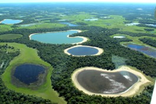
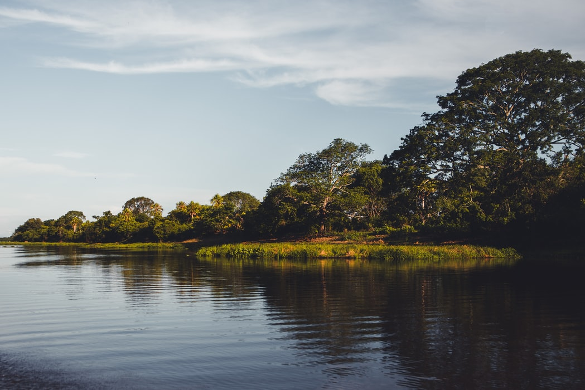

A Flora do Pantanal
Fonte: https://brasilescola.uol.com.br/brasil/o-pantanal.htm#:~:text=As%20plan%C3%ADcies%20inundadasdo%20Pantanal
Por ser um bioma com ligações próximas à Floresta Amazônica, mata atlântica e ao Cerrado, a paisagem pantaneira é bem diversificada com espécies como cambará-lixeira, canjiqueira e carandá, que se estabelecem em campos inundáveis de diversos tipos, incluindo brejos e lagoas com plantas típicas como camalotes e árvores de médio e grande porte, típicas da Amazônia, mas também conta com a presença de árvores tortuosas de baixo e médio porte, muito comuns no Cerrado.

Fonte: https://ambientes.ambientebrasil.com.br/natural/biomas/pantanal_-_flora_e_fauna.html
Os carandazais, nos quais o elemento predominante é a palmeira carandá, os buritizais, onde domina a
palmeira buriti e os paratudais, formados por um tipo de ipê, o paratudo.
Nas beiras dos rios há uma mata-de-galeria ou mata ciliar, que atua protegendo o rio, retendo
sedimento e regulando os ciclos
hidrológicos – com espécies vegetais como o tucum, o jenipapo, o cambará e o pau-de-novato,
perfeitamente adaptadas a áreas mais úmidas. Nas matas ciliares, próximas dos rios, é comum
encontrarmos jenipapos de 20 metros de altura, árvore amazônica.
Nessa área, a vegetação é densa e
exuberante, com figueiras, ingazeiros, e outras árvores altas. As planícies inundadas do Pantanal
possuem uma vegetação típica dessa localidade, como os vegetais aquáticos: aguapé,
erva-de-santa-luzia, utriculária e cabomba, muitos deles utilizados para fins medicinais.
Nas áreas
não tão alagadas, a presença de árvores do Cerrado é frequente, como os ipês e buritis. A flora
pantaneira tem alto potencial econômico como pastagem nativa – devido a formação de pastos naturais
dentro do bioma – e como uso de plantas apícolas, comestíveis, taníferas e medicinais.